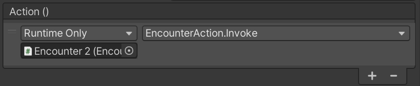

Add Triggers
Triggers are components that invoke a UnityEvent based on a defined condition in the level. Once a trigger fires, it cannot fire again. Use triggers to check conditions that depend on the scene state in that certain point of time. Triggers never depend on other triggers, and should not be used to react to another action. For example, "Encounter is over" is not a trigger, but simply a UnityEvent in Encounter Action.
Add a trigger
- Create an empty game object, and give it an indicative name.
- Attach the trigger component that you want, located in Scripts/Level/Triggers.
- Define the properties required by the trigger you have chosen.
- Attach an action by clicking '+'. First, select the game object on which the action occurs. Using the dropdown in the right, select the function that will be invoked by the trigger, in one of the components. 
Note
The action can even be a function on the same object. For example, you can create an object with a line trigger that invokes an encounter action, both on the same game object.
Available Triggers
Line Trigger: fires when the player position in the X axis, is greater than the specified Minimum X. When editing, a purple line Gizmo is drawn, representing Minimum X.
Rect Trigger: fires when the player enters a rectangle on the ground. When editing, a purple rectangle Gizmo is drawn, representing the rectangle's position and size. Even though position and size are Vector3, the Y value is ignored.
Death Trigger: fires when the player dies. If the player dies while being in knockback, it will fire once they land.
Warning
The player object might not be destroyed when the trigger fires, because Die Behaviour may define a death animation, which starts after the trigger is fired.